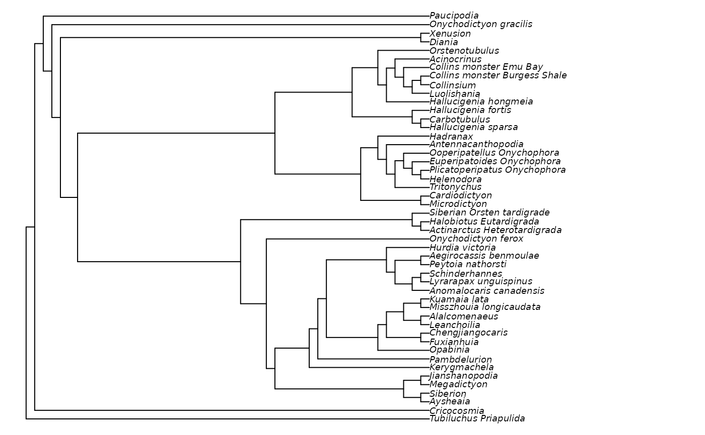

Ratchet() uses the parsimony ratchet (Nixon 1999)
to search for a more parsimonious tree using custom optimality criteria.
MorphyBootstrap(
edgeList,
morphyObj,
EdgeSwapper = NNISwap,
maxIter,
maxHits,
verbosity = 1L,
stopAtPeak = FALSE,
stopAtPlateau = 0L,
...
)
Ratchet(
tree,
dataset,
InitializeData = PhyDat2Morphy,
CleanUpData = UnloadMorphy,
TreeScorer = MorphyLength,
Bootstrapper = MorphyBootstrap,
swappers = list(TBRSwap, SPRSwap, NNISwap),
BootstrapSwapper = if (is.list(swappers)) swappers[[length(swappers)]] else swappers,
returnAll = FALSE,
stopAtScore = NULL,
stopAtPeak = FALSE,
stopAtPlateau = 0L,
ratchIter = 100,
ratchHits = 10,
searchIter = 4000,
searchHits = 42,
bootstrapIter = searchIter,
bootstrapHits = searchHits,
verbosity = 1L,
suboptimal = sqrt(.Machine$double.eps),
...
)
MultiRatchet(
tree,
dataset,
ratchHits = 10,
searchIter = 500,
searchHits = 20,
verbosity = 0L,
swappers = list(RootedNNISwap),
nSearch = 10,
stopAtScore = NULL,
...
)
RatchetConsensus(
tree,
dataset,
ratchHits = 10,
searchIter = 500,
searchHits = 20,
verbosity = 0L,
swappers = list(RootedNNISwap),
nSearch = 10,
stopAtScore = NULL,
...
)a list containing the following: - vector of integers corresponding to the parent of each edge in turn - vector of integers corresponding to the child of each edge in turn - (optionally) score of the tree - (optionally, if score provided) number of times this score has been hit
Object of class morphy, perhaps created with
PhyDat2Morphy().
a function that rearranges a parent and child vector,
and returns a list with modified vectors; for example SPRSwap().
Numeric specifying maximum number of iterations to perform in tree search.
Numeric specifying maximum number of hits to accomplish in tree search.
Numeric specifying level of detail to display in console: larger numbers provide more verbose feedback to the user.
Logical specifying whether to terminate search once a
subsequent iteration recovers a sub-optimal score.
Will be overridden if a passed function has an attribute stopAtPeak set by
attr(FunctionName, "stopAtPeak") <- TRUE.
Integer. If > 0, tree search will terminate if the score
has not improved after stopAtPlateau iterations.
Will be overridden if a passed function has an attribute stopAtPlateau set
by attr(FunctionName, "stopAtPlateau") <- TRUE.
further arguments to pass to TreeScorer(), e.g. dataset = .
A tree of class phylo.
a dataset in the format required by TreeScorer().
Function that sets up data object to prepare for tree search.
The function will be passed the dataset parameter.
Its return value will be passed to TreeScorer() and CleanUpData().
Function to destroy data object on function exit.
The function will be passed the value returned by InitializeData().
function to score a given tree.
The function will be passed three parameters, corresponding to the
parent and child entries of a tree's edge list, and a dataset.
Function to perform bootstrapped rearrangements of tree.
First arguments will be an edgeList and a dataset, initialized using
InitializeData(). Should return a rearranged edgeList.
A list of functions to use to conduct edge rearrangement during tree search.
Provide functions like NNISwap to shuffle root position,
or RootedTBRSwap if the position of the root should be retained.
You may wish to use extreme swappers (such as TBR) early in the list,
and a more subtle rearranger (such as NNI) later in the list to make
incremental tinkerings once an almost-optimal tree has been found.
Function such as RootedNNISwap to use
to rearrange trees within Bootstrapper().
Set to TRUE to report all MPTs encountered during the
search, perhaps to analyse consensus.
stop search as soon as this score is hit or beaten.
Stop when this many ratchet iterations have been performed.
Stop when this many ratchet iterations have found the same best score.
Integer specifying maximum rearrangements to perform on each bootstrap or
ratchet iteration.
To override this value for a single swapper function, set e.g.
attr(SwapperFunction, "searchIter") <- 99
Integer specifying maximum times to hit best score before terminating a tree
search within a ratchet iteration.
To override this value for a single swapper function, set e.g.
attr(SwapperFunction, "searchHits") <- 99
Integer specifying maximum rearrangements to perform on each bootstrap
iteration (default: searchIter).
Integer specifying maximum times to hit best score on each bootstrap
iteration (default: searchHits).
retain trees that are suboptimal by this score. Defaults to a small value that will counter rounding errors.
Number of Ratchet searches to conduct
(for RatchetConsensus())
MorphyBootstrap() returns a tree that is optimal under a random
sampling of the original characters.
Ratchet() returns a tree modified by parsimony ratchet iterations.
MultiRatchet() returns a list of optimal trees
produced by nSearch
ratchet searches, from which a consensus tree can be generated using
ape::consensus() or TreeTools::ConsensusWithout().
For usage pointers, see the vignette.
RatchetConsensus(): deprecated alias for MultiRatchet()
Nixon KC (1999). “The Parsimony Ratchet, a new method for rapid parsimony analysis.” Cladistics, 15(4), 407--414. ISSN 0748-3007, doi:10.1111/j.1096-0031.1999.tb00277.x .
Adapted from pratchet() in the
phangorn package.
Other custom search functions:
EdgeListSearch(),
Jackknife(),
SuccessiveApproximations()
data("Lobo", package = "TreeTools")
njtree <- TreeTools::NJTree(Lobo.phy)
# Increase value of ratchIter and searchHits to do a proper search
quickResult <- Ratchet(njtree, Lobo.phy, ratchIter = 2, searchHits = 3)
#> * Beginning Parsimony Ratchet, with initial score 231
#> Completed parsimony ratchet after 2 iterations with score 215
# Plot result (legibly)
oldPar <- par(mar = rep(0, 4), cex = 0.75)
plot(quickResult)

par(oldPar)